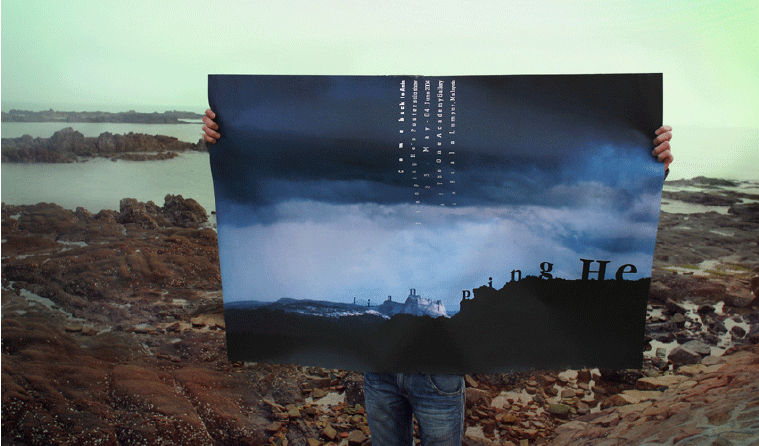

Come back to Asia Measures: A0 Technique: Silk screen Place and date: Berlin, May 2004 Client: The One Academy, Kuala Lumpur, Malaysia Description: Jianping He's Solo Poster Show Photo by Yin Jiang (Beijing) 2006
home back
